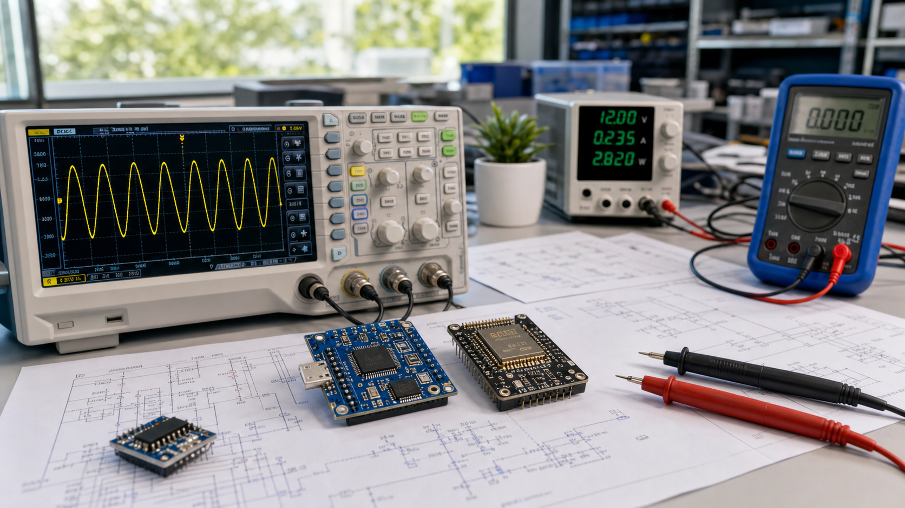

Open ideas from first light
Larkix 连接电子信息、仿真工具、开源项目与长期学习记录。进入 LarkixMaker，继续浏览技术内容、网页小程序和工程实践。
技术文章、课程路线、开源项目和网页小程序的内容母站。
把 CNL 电路描述转换为 SVG 原理图、IR JSON 与 ERC 诊断。
Markdown 转 Word 文档，保留标题层级、列表、表格与公式预览。